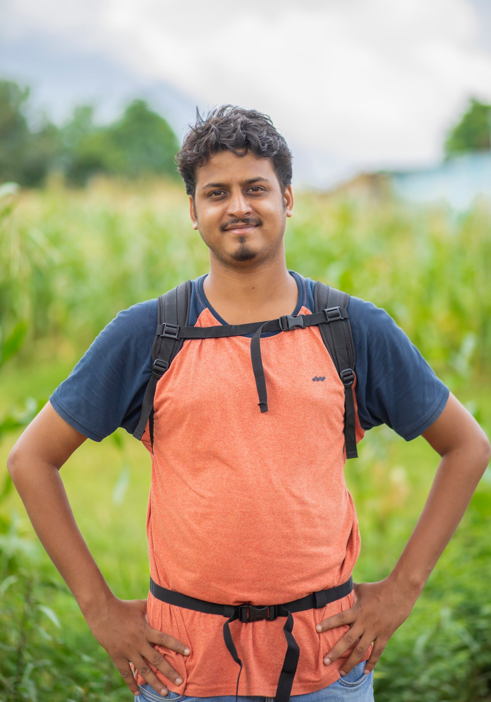
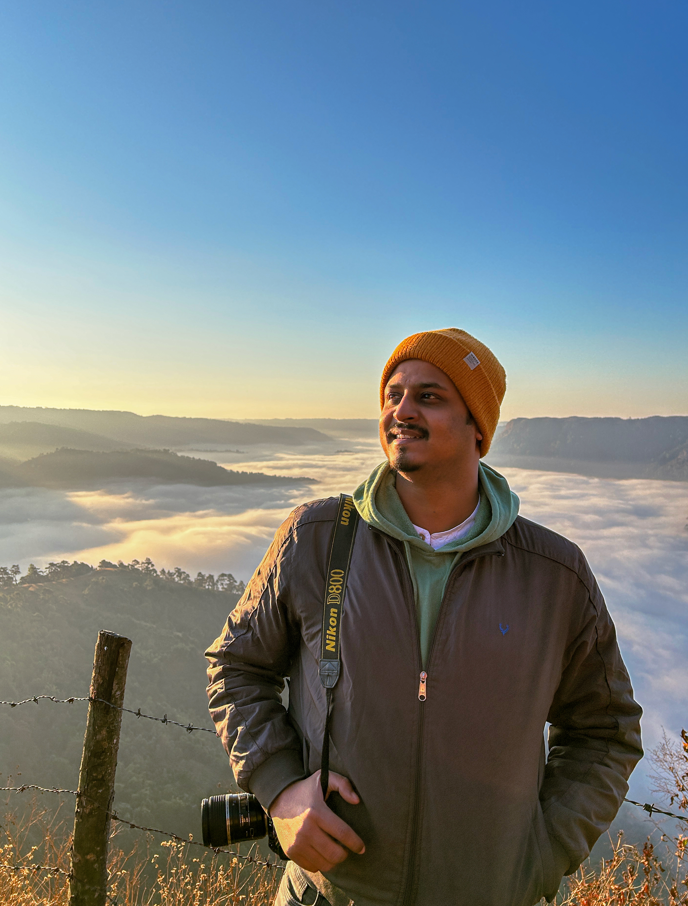

Professional Summary
Gaurav Rai is a visual designer based in West Bengal, India, with 5+ years of experience across agency and corporate environments. He specializes in branding, presentation design, UI layouts, and visual communication systems, creating work that is both purposeful and refined. His strength lies in turning complex ideas into clear, engaging visuals that support real business goals.
His approach is rooted in observation and clarity, often drawing inspiration from nature’s balance and simplicity. He focuses on building designs that feel intuitive, structured, and effective—whether for digital interfaces, presentations, or brand assets. With expertise in Adobe Creative Suite and Figma, he handles diverse projects with a balance of creativity and strategy.
Alongside design, he practices photography, with international recognition in macro and monochrome work. This experience sharpens his eye for detail and composition, influencing his overall design perspective and approach to visual storytelling.



Career History
Graphic Designer
Immigration Advisors New Zealand
- Led Visual Strategy for expansion into Philippines and Indonesia, scaling creative assets across 6+ international markets to drive client acquisition.
- Led daily design production resulting in a 22% increase in CTR and a 12% reduction in CPC through rigorous A/B testing of ad variations.
- Designed 250+ multi-channel assets (digital, print, UI elements, landing visuals), contributing to a 15% lift in campaign conversion rates.
- Designed end-to-end marketing visuals that boosted overall brand engagement by 30% while maintaining strict brand integrity.
- Managed version control for 500+ assets, ensuring 100% on-time delivery for high-velocity marketing sprints using Google Workspace.
- Integrated GenAI-powered workflows that natively accelerated creative production by up to 2x.
Senior Graphic Designer
Design Brewing Company
- Executed end-to-end branding for premium F&B outlets including Sorano (Kolkata; 2x 30 Best Bars India), Mehico (Kolkata; 30 Best Bars India), and Latoya (Delhi), elevating the User Experience & driving a 40% increase in footfall.
- Led technical production for high-end menus and on-ground collateral, ensuring 100% color accuracy and material quality for award-winning physical brand touchpoints.
- Directed visual assets for 20+ digital/print campaigns and 50+ live events, improving brand recall by 25% through rigorous application of typography and color theory.
- Collaborated in cross-functional teams to translate complex briefs into marketing materials that consistently met high-velocity performance goals.
Project Manager
Techwala K3 Solutions Pvt. Ltd.
- Engineered end-to-end design systems for 10+ marquee clients, including MCVK Group, Eastern Diagnostics, Calcutta Chamber of Commerce, and Ramkrishna Paramhansa University.
- Led 50+ multidisciplinary projects (Design, Photo, Video) maintaining a 95% client retention rate across Education, Healthcare, and Tech sectors.
- Conceptualized and designed "Voyage," a 125-page commemorative magazine celebrating 25 years; managed full project lifecycle from layout to final print-ready production.
- Designed creatives for 100+ cross-industry campaigns, leveraging high-ROI visual strategies to drive measurable business growth for B2B and B2C.
- Conducted 50+ content creation classes for BBA-Digital Marketing students at The Neotia University, focusing on visual storytelling and industry styling.
Photographer (Project Basis) - Internship
Blackboard Kolkata Inc
- Documented 4 large-scale projects for the Ministry of Rural Development (MoRD), Government of India, actively engaged across 4 major states (RJ, BH, MP, JH).
- Delivered 500+ premium visual assets featured in 10+ official Government of India publications, directly reaching 10,000+ beneficiaries across the nation.
- Executed a month-long intensive shoot across Rajasthan, capturing over 100+ rural women entrepreneurs spanning 50+ remote villages.
- Captured high-impact imagery for national-level social-welfare campaigns, focusing closely on human-centric narratives and rural empowerment.